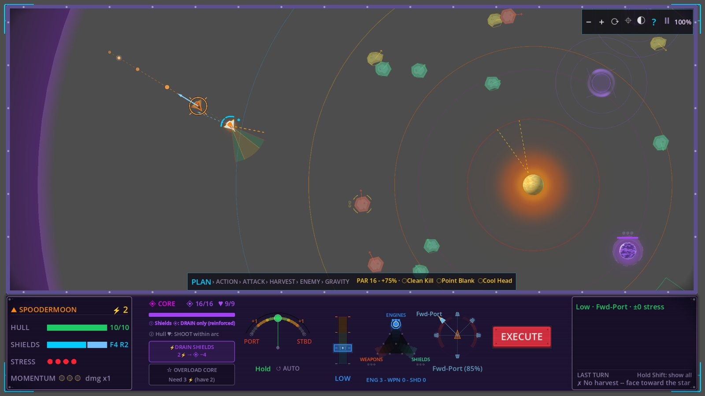
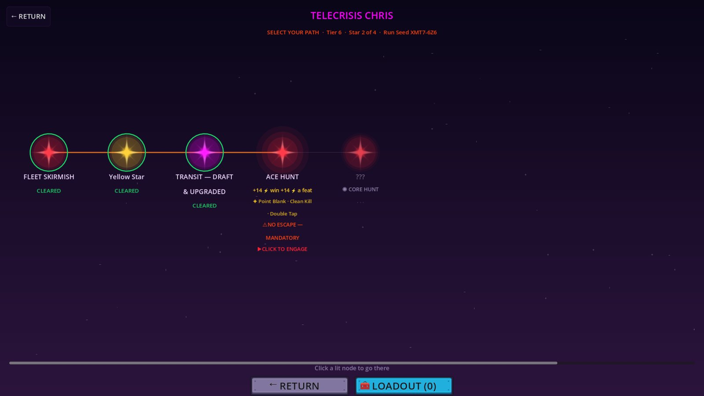

Telecrisis Chris
A tactical turn-based space roguelike where piloting and planning result in better rewards. Every star has a harvesting Core to shut down. Maneuver in space to find the attack window after tearing down the shields before the star's radiation and its defenders take you down first.

How a turn works
Every turn runs the same six phases. You commit in PLAN, then watch it play out.
- PLANthrottle, turn, power - dont forget to drain!
- ACTIONpurge stress, vent, patch…
- ATTACKselect a target and roll for attack
- HARVESTmine energy
- ENEMYbrace for attacks
- GRAVITYthe star pulls
Momentum flight
Speed carries. Set throttle, turn and power, then EXECUTE. Turning hard and high throttle build stress, so planning ahead is critical.
Break the Core
The Core orbits the star and is shielded. Drain the shields with harvested energy or shoot them down, then target the open attack arc to shut down the Core completely.
Energy is everything
Harvest it from the field, and use it to drain the Core's shields, or regenerate hull mid fight. Awarded additional on successful star completetion and side missions to spend on ship upgrades.
Fly well, get paid
Beat par, fly flawlessly and hold the sweet spot for bonus rewards. Remember -Good piloting pays out.
A run across the stars
Each run is a path across a star map with various stops along the way. A star fight, side quest, or transit stop to upgrade. Clear the path to the final Core.
Between stars you visit the Garage for ship parts and the Pilot's Lounge for your pilot's keystone.
Clear tiers to unlock new pilots, launch protocols and harder mutators.

| Star | What to expect |
|---|---|
| 🌟 Yellow Star | Standard conditions. A fair fight. |
| 🔴 Red Dwarf | Dense field, slow flares. |
| 🔵 Blue Giant | Fast flares and a fast-spinning asteroid field. |
| 💫 Pulsar | Rapid flares and brutal gravity pull. |
Side quests
Side quests are encountered as you travel between stars.
⚔ Fleet Skirmish
An ambush! Destroy or be destroyed.

☠ Ace Hunt
An enemy ace and its escorts. Take on the challenge and show off superior piloting skills.

⛟ Escort Convoy
Keep a freighter alive until it reaches safety. Raiders want it, and it can only survive if you stay close.

◎ Wormhole Run
A race down a collapsing corridor. Reach the critical point before the gravitaional collapse!

Ways to play
Solo runs
The main campaign played alone.
Co-op
The campaign, but coop or with human a bot.
PvP
Pilot against pilot around a single star, with asteroids as cover.
Pilots
Eight pilots, each with their own ship, stats and signature ability. Meet them all →